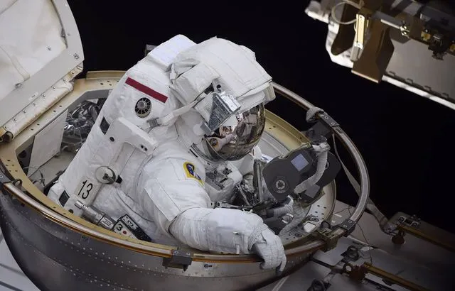

Avec « Parastronaute », la conquête spatiale s’ouvre au handicap

C’est une première dans l’histoire de la conquête spatiale. L’agence spatiale européenne (ESA), qui s’apprête à décider du financement de ses futurs programmes, va donner la possibilité à des personnes handicapées de devenir astronaute et voler en orbite.
Ce projet inédit, baptisé « parastronaute », sera présenté mercredi aux 22 Etats membres de l’ESA, qui dévoilera également, sitôt son budget adopté, sa nouvelle promotion d’astronautes : entre quatre et six élus parmi près de 23.000 candidats européens, qui succéderont à la promotion de 2009 dont fait partie l’astronaute français, Thomas Pesquet. Les personnes porteuses de handicap physique étaient jusqu’ici exclues des sélections pour devenir astronaute, réputées parmi les plus rudes.
« Le handicap n’est pas une limitation » « Le projet parastronaute requiert un changement complet de philosophie » sur la notion d’aptitude médicale, un concept d’origine militaire destiné à sélectionner les pilotes de combat, explique à l’AFP Guillaume Weerts, médecin en chef des astronautes au sein de l’ESA. Lors du lancement de sa campagne de recrutement, en février 2021, l’agence avait annoncé ouvrir les portes de l’espace à un ou plusieurs candidats porteurs d’un handicap au niveau des membres inférieurs (en raison d’une amputation où une malformation congénitale), et dont les noms pourraient être révélés mercredi.
22/11/22 à 15h07